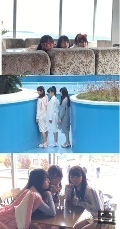
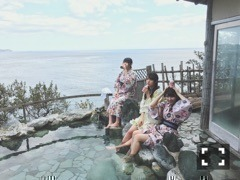
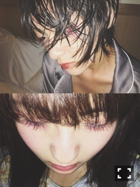

伊藤万理華
OFFICIAL BLOG
2016/03
19
Sat
伊藤万理華
トゥ。703回目
スピリッツ
井上氏と日芽香と３人で
ふろがーる！とコラボ表紙です。

熱海に行きました

温泉の他にも街を散策し、
喫茶店やプールや海に行ったり。
本当に楽しかった〜〜

海×足湯×コーヒー牛乳
しあわせのしゅんかん
撮影後、みんなでお寿司食べました！
えんがわ！炙りサーモン！
身体が信じられないくらい衰えてて
1日で歩くのが辛くなるくらい
筋肉痛になりました。。
なんとかして新しい自分を
見せられるようにがんばります。
in GUAM
まりか
コメント(344)
2016/03/19 20:30
« 青ザリガニ。702回...
｜
TOP
｜
がっこんちょ。704... »
PAGE TOP ▲